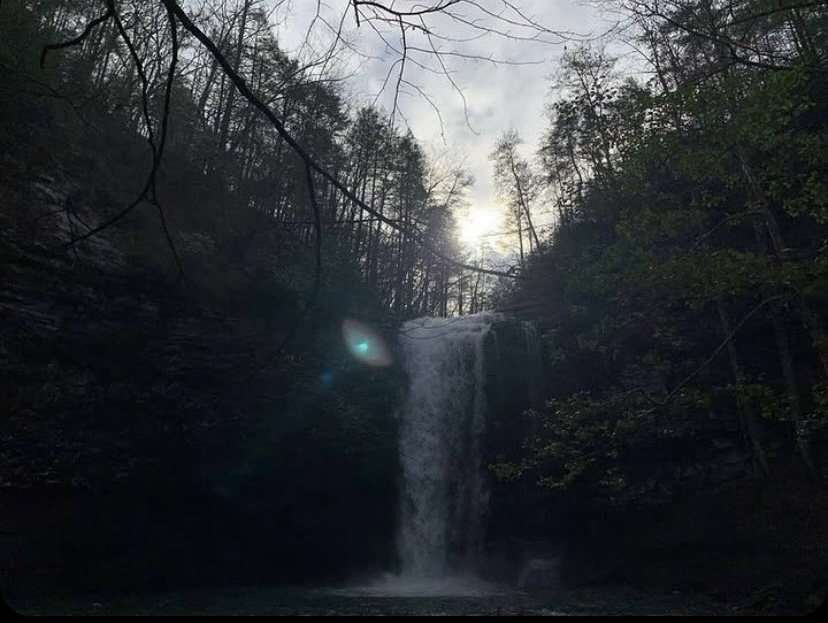
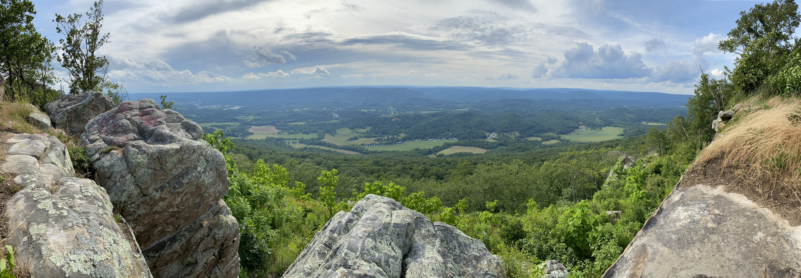

According to experts online, "The grand scenic photograph is one of the most common types of nature images. It's usually the first kind of outdoor photos people begin making." This being said, it is sometimes confused with landscape. They CAN be the same, but most times; they are different subjects. That being said, scenic is one of the most beautiful kinds of photography. Still Life photography-which is a topic for another time-is sometimes a subcategory of Scenic. Scenic Photography is really anything that has scenery.
According to experts, "Landscape photography commonly involves daylight photography of natural features of land, sky and waters, at a distance." This means anything from a distance-that could be somewhat considered scenic(in certain scenarios)-is considered landscape. You're getting the lay of the land somewhat. You're getting to see the full picture when you take a step back. "Take a step back, breathe it all in and try to see the bigger picture." I know you've heard that a lot. This doesn't just apply to daily life problems, but photography as well!
